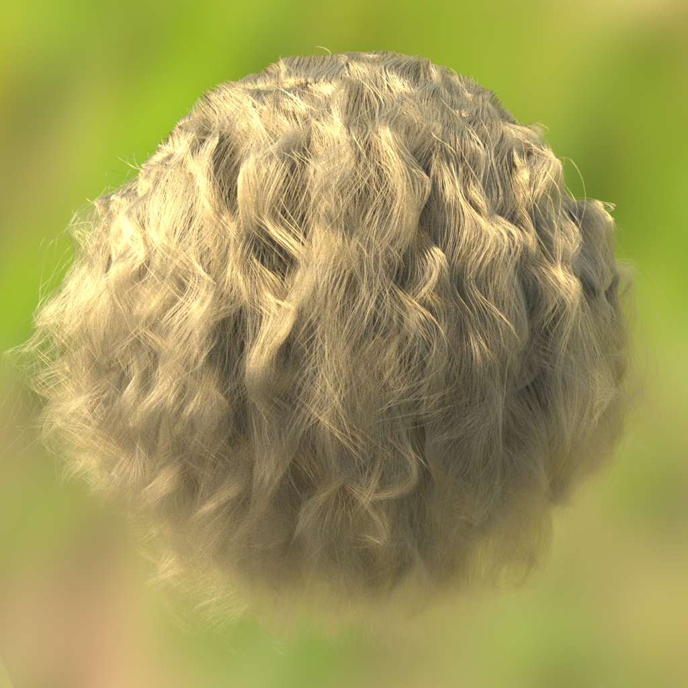
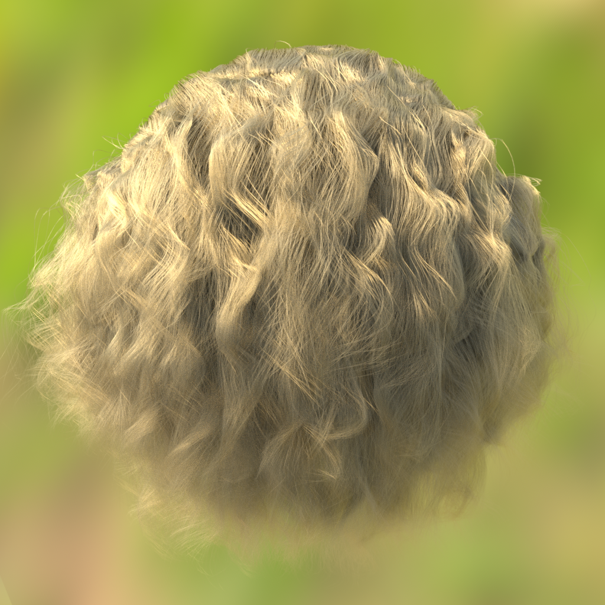
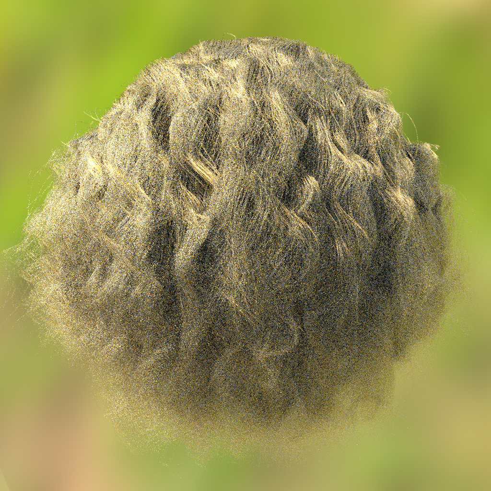
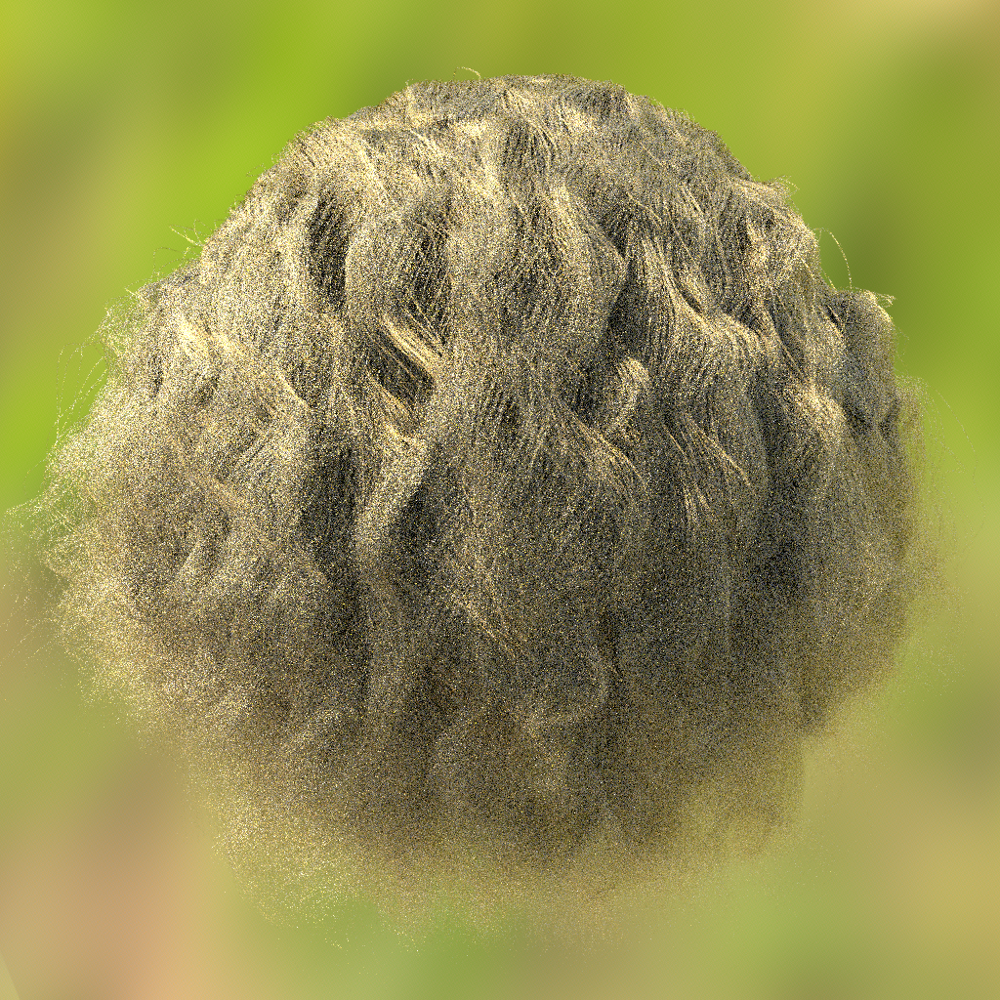
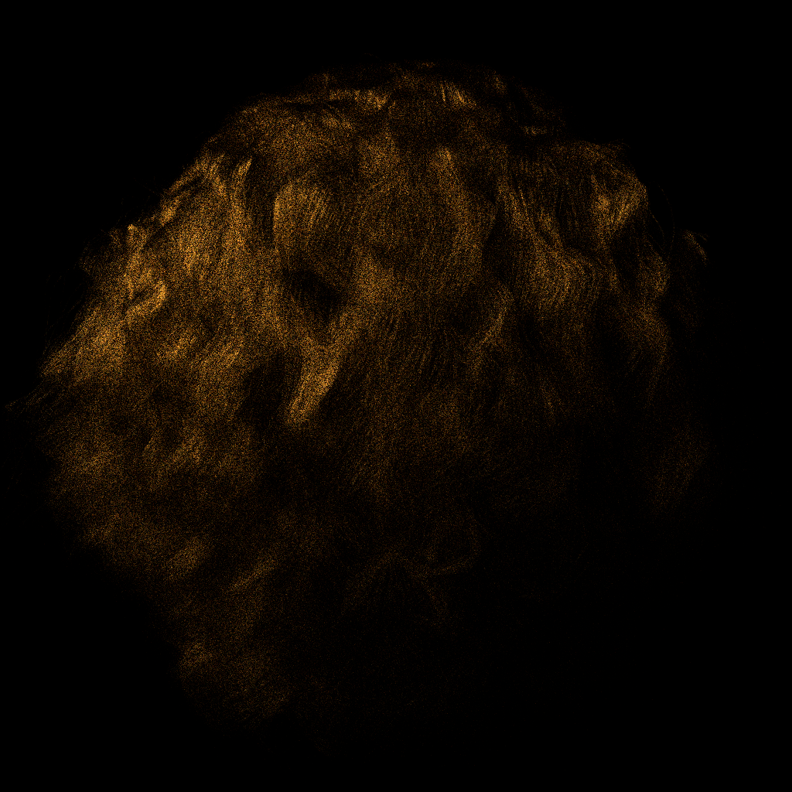

An implementation of Agarwal et al. 2003 integrated into pbrt-v4
This project implements Structured Importance Sampling of Environment Maps (Agarwal et al., SIGGRAPH 2003) as a new light class StructuredInfiniteLight inside pbrt-v4. The core idea is to replace uniform random sampling of an HDR environment map with a hierarchical stratification scheme that concentrates samples in bright regions of the map.
pbrt-v4 already provides ImageInfiniteLight which builds a 2D piecewise-constant distribution from the image. Our implementation adds a recursive splitting strategy that partitions the environment map into N equal-energy rectangular strata, then samples one stratum per light ray. This reduces variance when the environment map has high-contrast features such as a bright sun or spotlights.
The stratification algorithm proceeds as follows:
Build energy map. At construction time, call image.GetSamplingDistribution() to obtain a 2D array of per-pixel luminance values.
Recursive splitting. Maintain a priority queue of rectangular regions. Repeatedly extract the region with the highest total energy, split it along its longer axis at the midpoint, and push both halves back. Repeat until the desired number of strata N is reached.
Sampling. At render time, pick one stratum uniformly at random (probability 1/N). Sample a UV coordinate uniformly within that stratum. Convert UV to a sphere direction using pbrt's EqualAreaSquareToSphere mapping.
PDF. The probability density is 1 / (N × stratum_area × 4π), where 4π is the Jacobian for the equal-area sphere mapping.
void StructuredInfiniteLight::BuildStrata(const Array2D<Float> &d,
int nStrata, Allocator alloc) {
strata = pstd::vector<Bounds2f>(alloc);
std::vector<Bounds2f> queue;
queue.push_back(Bounds2f(Point2f(0,0), Point2f(1,1)));
while ((int)strata.size() + (int)queue.size() < nStrata && !queue.empty()) {
// Find region with most energy
int best = 0;
Float bestE = RegionEnergy(d, queue[0]);
for (int i = 1; i < (int)queue.size(); i++) {
Float e = RegionEnergy(d, queue[i]);
if (e > bestE) { bestE = e; best = i; }
}
Bounds2f b = queue[best];
queue.erase(queue.begin() + best);
// Split along longer axis at midpoint
Float dx = b.pMax.x - b.pMin.x;
Float dy = b.pMax.y - b.pMin.y;
Float mid;
Bounds2f b0, b1;
if (dx >= dy) {
mid = (b.pMin.x + b.pMax.x) * 0.5f;
b0 = Bounds2f(b.pMin, Point2f(mid, b.pMax.y));
b1 = Bounds2f(Point2f(mid, b.pMin.y), b.pMax);
} else {
mid = (b.pMin.y + b.pMax.y) * 0.5f;
b0 = Bounds2f(b.pMin, Point2f(b.pMax.x, mid));
b1 = Bounds2f(Point2f(b.pMin.x, mid), b.pMax);
}
queue.push_back(b0);
queue.push_back(b1);
}
for (auto &b : queue) strata.push_back(b);
}pstd::optional<LightLiSample> SampleLi(LightSampleContext ctx, Point2f u,
SampledWavelengths lambda,
bool allowIncompletePDF) const {
if (strata.empty()) return {};
int si = std::min<int>(u[0] * strata.size(), (int)strata.size() - 1);
Float ru = u[0] * strata.size() - si;
const Bounds2f &b = strata[si];
Point2f uv(Lerp(ru, b.pMin.x, b.pMax.x),
Lerp(u[1], b.pMin.y, b.pMax.y));
Vector3f wLight = EqualAreaSquareToSphere(uv);
Vector3f wi = renderFromLight(wLight);
Float stratumArea = (b.pMax.x - b.pMin.x) * (b.pMax.y - b.pMin.y);
Float pdf = 1.f / ((Float)strata.size() * stratumArea * 4 * Pi);
return LightLiSample(ImageLe(uv, lambda), wi, pdf,
Interaction(ctx.p() + wi * (2 * sceneRadius), &mediumInterface));
}The implementation required changes to two files:
| File | Change |
|---|---|
| src/pbrt/lights.h | Added full StructuredInfiniteLight class declaration and inline SampleLi, Le, ImageLe |
| src/pbrt/lights.cpp | Added BuildStrata, constructor, Phi, PDF_Li, SampleLe, PDF_Le, ToString |
| src/pbrt/base/light.h | Forward declaration and registration in Light tagged pointer type list |
| src/pbrt/lights.cpp (parser) | Instantiate StructuredInfiniteLight when nstrata > 0, fallback to ImageInfiniteLight otherwise |
The new sampler is activated via a scene file parameter:
LightSource "infinite"
"string filename" "envmap.exr"
"integer nstrata" [64] # default; set to 0 for original ImageInfiniteLightTaggedPointer dispatch mechanism for polymorphism on both CPU and GPU. Any new light type must be registered in the Light type list in base/light.h, otherwise the build fails with a static assertion error.
Test scene: hair-blonde-3-bounces.pbrt (pbrt-v4-scenes), illuminated by sunflowers_equiarea_blurred.exr. Ground truth rendered at 4096 spp. Comparison rendered at 16 spp.
| Method | SPP | MSE (vs ground truth) | Δ |
|---|---|---|---|
| ImageInfiniteLight (baseline) | 4096 | — | reference |
| StructuredInfiniteLight (64 strata) | 4096 | 0.000632 | — |
| ImageInfiniteLight (baseline) | 16 | 0.08590 | — |
| StructuredInfiniteLight (64 strata) | 16 | 0.08003 | −6.8% |


At 4096spp both methods converge to visually identical results, confirming correctness.


At 16spp, structured sampling produces slightly less variance (MSE −6.8%). Difference is subtle here due to the hair BSDF dominating variance; environment map sampling benefits are more pronounced in open scenes with high-contrast environment maps.

The difference image highlights where the two sampling strategies diverge. Bright regions indicate the largest per-pixel discrepancies, primarily around high-frequency hair strands where lighting variation is greatest.
The hair BSDF introduces significant variance from multiple-scattering path sampling, which dominates over environment map sampling variance at low spp. The benefit of structured environment map sampling is most pronounced in scenes where: (1) the environment map has a sharp high-contrast light source such as a direct sun, and (2) the object materials are relatively simple (e.g. diffuse or specular) so that the lighting integral is the primary source of variance.
At 4096spp both methods produce visually identical results (MSE between them: 0.000632), confirming the PDF and sampling are consistent and unbiased.
The current implementation splits each region at the midpoint rather than at the energy-median. Splitting at the energy median would produce more equal-energy strata and improve the variance reduction. The greedy priority-queue strategy also does not guarantee globally optimal stratification, but it is a faithful implementation of the core algorithm described in the paper.
| File | Role |
|---|---|
src/pbrt/lights.h | Class definition, inline SampleLi, Le, ImageLe |
src/pbrt/lights.cpp | Constructor, BuildStrata, PDF_Li, SampleLe, PDF_Le, Phi, ToString, parser hook |
src/pbrt/base/light.h | Type registration in Light TaggedPointer |
Agarwal, S., Ramamoorthi, R., Belongie, S., and Jensen, H. W. (2003). Structured importance sampling of environment maps. ACM Transactions on Graphics (SIGGRAPH 2003), 22(3), 605–612.
Pharr, M., Jakob, W., and Humphreys, G. (2023). Physically Based Rendering: From Theory to Implementation, 4th edition. MIT Press. pbrt.org